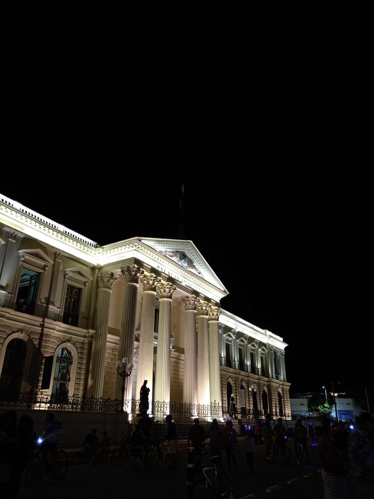
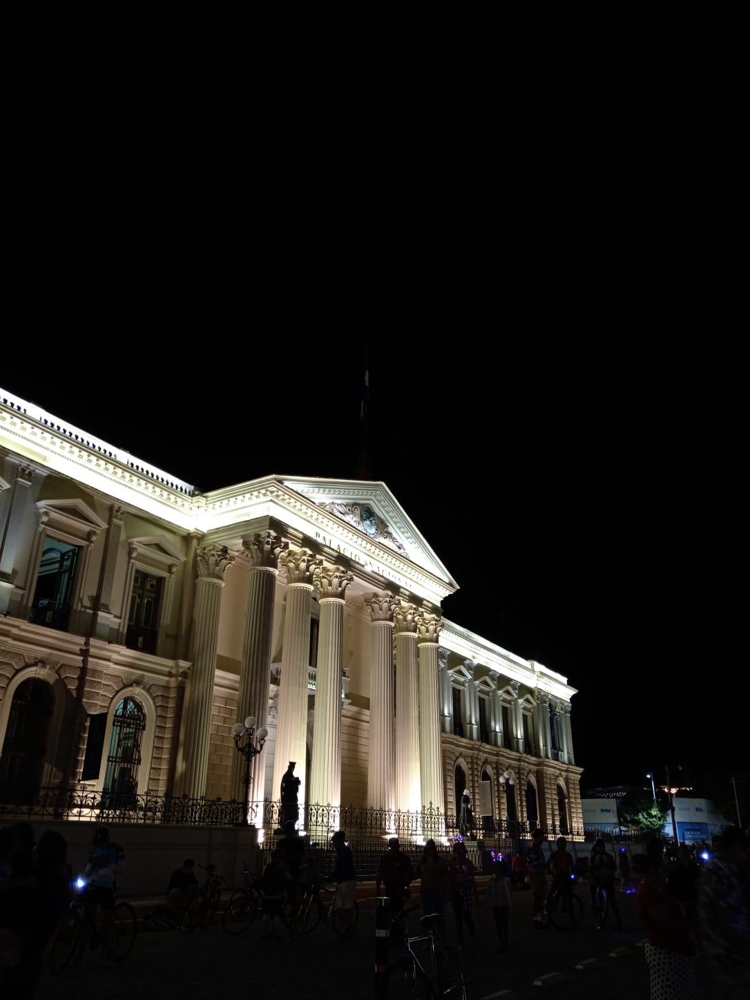

Historia
La idea de construcción de El Palacio Nacional surgió durante el gobierno del General Gerardo Barrios, sin embargo, fue inaugurado durante el mandato del presidente Francisco Dueñas, la obra se realizó desde 1866 hasta 1870. Sin embargo, un incendio desarrollado el 19 de noviembre de 1889 redujo a escombros al Primer Palacio Nacional. Este incendio causó la pérdida del Archivo Histórico Nacional, archivos de todos los ministerios y obras de arte invaluables. La construcción del actual Palacio Nacional inició en 1905 bajo la presidencia de Pedro José Escalón y finalizó en el año 1911. El 10 de julio de 1980 El Palacio Nacional fue declarado monumento nacional bajo decreto legislativo No. 316 .


Arquitectura
El Palacio Nacional incorpora una combinación de diferentes estilos de arquitectura clásica, con un estilo ecléctico en el que destaca la influencia de neoclasicismo. Para la construcción del Palacio se utilizaron materiales importados, entre los que destacan columnas, balcones y elementos de mármol de Italia, estructuras metálicas de Hamburgo, lámparas de cristal y barandales metálicos de Bélgica El Palacio cuenta con 101 salones secundarios y cuatro salones principales que poseen colores distintivos y en los cuales se albergaban los poderes de El Estado. El Salón rojo era el salón dl ejecutivo, en el que se recibían las credenciales de los embajadores acreditados, el salón azul fue declarado monumento nacional en 1974 y albergaba a la Asamblea Legislativa, en el salón rosado pertenecía al poder judicial y se encuentra el primer escudo salvadoreños y el salón amarillo que era el despacho del presidente de la República. En el centro de El Palacio Nacional se encuentra un patio en forma de cruz griega en la que se plantaron cinco araucarias, las cuales representan a las naciones centroamericanas. En la fachada de este monumento se encuentran las estatuas de Isabel la Católica y Cristóbal Colón las cuales fueron donadas por Alfonso XIII de España. Dato: Se desarrollo un concurso sobre el plano iconográfico del Palacio Nacional, en el cual ganó el ingeniero José Alcaine.
 
